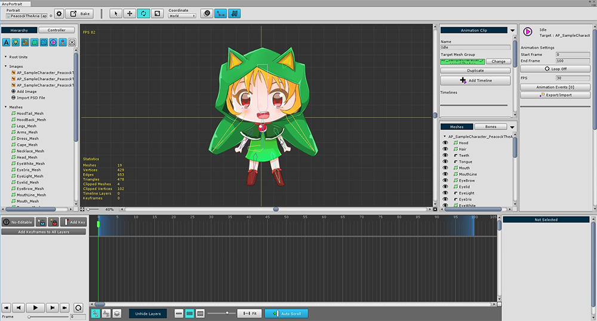
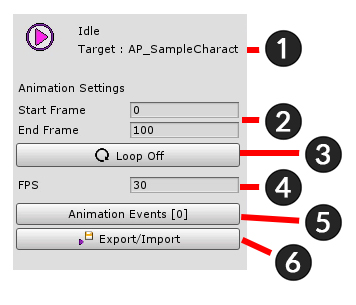

AnyPortrait > Getting Started > 2.6. Creating an Animation Clip
2.6. Creating an Animation Clip
1.0.0

Adds a modifier to be associated with the animation.
Transform (Animation) Modifiers and Morph (Animation) Modifiers are modifiers for animation.
In this case, select the Transform (Animation) modifier for bone animation.

Add an animation clip.
Click the Add Animation Clip button to create and select an animation clip.

(1) Specify the name of the animation clip. I set it to "Idle" here.
(2) Press the Set Mesh Group button and (3) Select the mesh group you were working with.
Note : The animation name is used to play the animation during the game. If the name is duplicated or entered incorrectly, playback will not be possible.

Animation clip work screen associated with mesh group.
You will create an animation on this screen.

Animation clip setting UI.
1. The name of the animation clip and mesh group
2. Start and End frames of animation clip
3. Whether Loop
4. Frames per second (FPS)
5. Animation Events
6. Export / Import animation to file

Timeline UI in which the keyframe animation is registered.
Add animated data here called Timeline.
1. Edit mode UI : Turn on / off edit mode, add key frame, and lock.
2. Timeline header : The names of the registered Timeline and Timeline Layer are displayed.
3. Playback UI : UI that controls animation, play, stop, or move frame.
4. Keyframe workspace : Keyframes appear. (Left and Right scrolling : Mouse Wheel Button Drag , Up and Down scrolling : Mouse Wheel Scrolling )
5. View Settings UI : Contains functions related to viewing settings related to the timeline UI.
6. Details UI : Information and functions of the selected timeline, timeline layer, and key frame are displayed.

Edit mode UI
1. Start / End animation editing ( A )
2. Selection Lock On / Off ( S )
3. Modifier Lock On / Off ( D )
4. Add Keyframe at the current frame ( F )
5. Create keyframes on all layers in the current frame

Playback UI
1. Move to First frame ( Shift + < )
2. Move to Previous frame ( < )
3. Play or Pause ( Space Bar )
4. Move to Next frame ( > )
5. Move to Last frame ( Shift + > )
6. Loop On / Off
7. Currently playing frame

View Settings UI of timelines
1. Timeline Layers Order : Determines in which order the timeline layers are shown. (Registration order, name order, and rendering order)
2. Unhide Layers : If any timeline layer is hidden, you can press this button to make it appear.
3. Timeline UI Size : Adjusts the size of the timeline UI at the bottom of the entire editor area.
4. UI Zoom Ratio : Zoom ratio of the main timeline workspace where the keyframe is displayed.
5. Fit : Automatically adjusts the zoom ratio of the main workspace to fit the entire playback range.
6. Auto Scroll : If this function is on, scrolling automatically moves to the frame when playing.